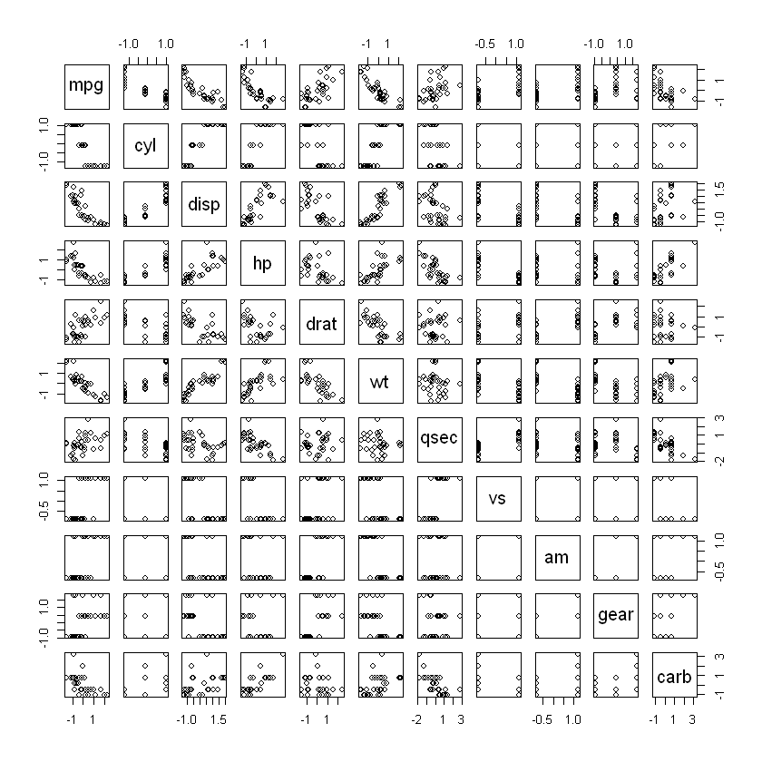
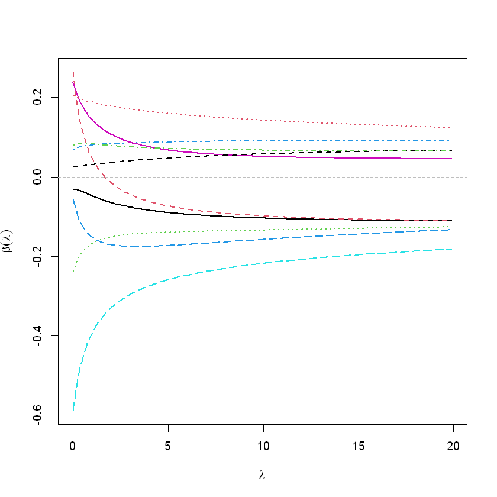
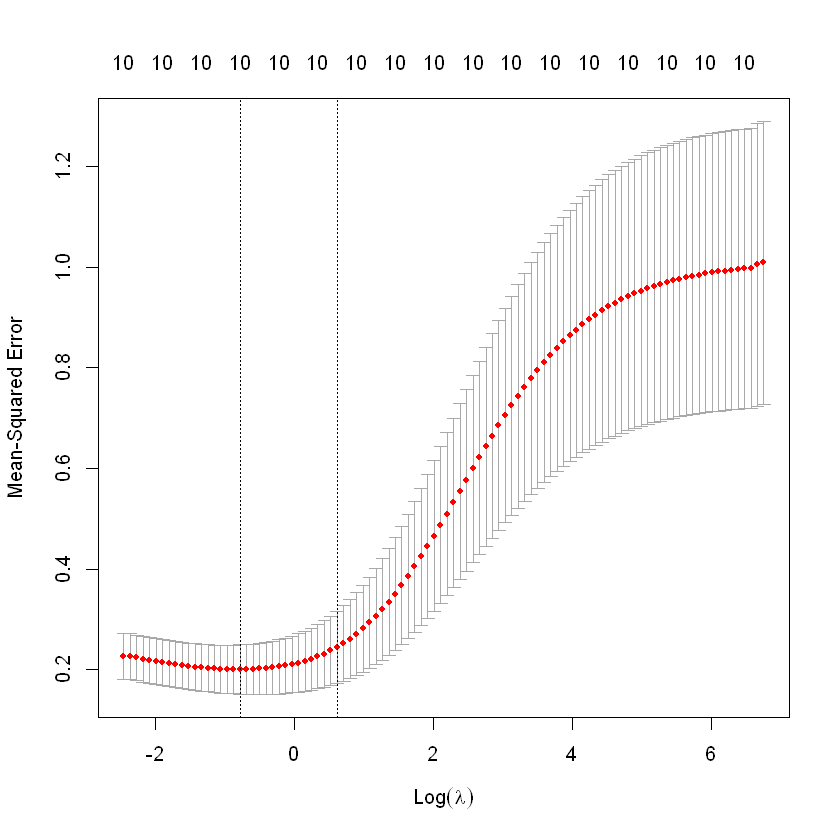
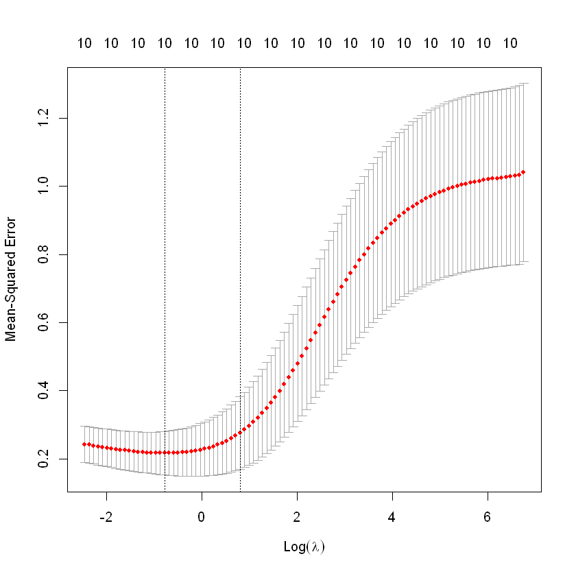
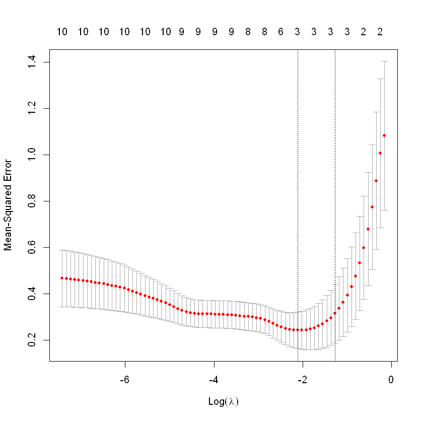

library(MASS) #lm.ridge
library(car) #vif
library(glmnet) #Ridge, LassoImport
완전한 다중공선성 (perfect multicollinearity) 완전한 다중공선성을 갖는 데이터 생성
gen_perfect_collin_data = function(num_samples = 100) {
x1 = rnorm(n = num_samples, mean = 80, sd = 10)
x2 = rnorm(n = num_samples, mean = 70, sd = 5)
x3 = 2 * x1 + 4 * x2 + 3
y = 3 + x1 + x2 + rnorm(n = num_samples, mean = 0, sd = 1)
data.frame(y, x1, x2, x3) }set.seed(42)
perfect_collin_data = gen_perfect_collin_data()
head(perfect_collin_data)| y | x1 | x2 | x3 | |
|---|---|---|---|---|
| <dbl> | <dbl> | <dbl> | <dbl> | |
| 1 | 170.7135 | 93.70958 | 76.00483 | 494.4385 |
| 2 | 152.9106 | 74.35302 | 75.22376 | 452.6011 |
| 3 | 152.7866 | 83.63128 | 64.98396 | 430.1984 |
| 4 | 170.6306 | 86.32863 | 79.24241 | 492.6269 |
| 5 | 152.3320 | 84.04268 | 66.66613 | 437.7499 |
| 6 | 151.3155 | 78.93875 | 70.52757 | 442.9878 |
round(cor(perfect_collin_data),4)| y | x1 | x2 | x3 | |
|---|---|---|---|---|
| y | 1.0000 | 0.9112 | 0.4307 | 0.9558 |
| x1 | 0.9112 | 1.0000 | 0.0313 | 0.7639 |
| x2 | 0.4307 | 0.0313 | 1.0000 | 0.6690 |
| x3 | 0.9558 | 0.7639 | 0.6690 | 1.0000 |
- x3이 x1과 y에 영향을 주는것처럼 보임
perfect_collin_fit = lm(y ~ x1 + x2 + x3, data = perfect_collin_data)
summary(perfect_collin_fit)
Call:
lm(formula = y ~ x1 + x2 + x3, data = perfect_collin_data)
Residuals:
Min 1Q Median 3Q Max
-2.57662 -0.66188 -0.08253 0.63706 2.52057
Coefficients: (1 not defined because of singularities)
Estimate Std. Error t value Pr(>|t|)
(Intercept) 2.957336 1.735165 1.704 0.0915 .
x1 0.985629 0.009788 100.702 <2e-16 ***
x2 1.017059 0.022545 45.112 <2e-16 ***
x3 NA NA NA NA
---
Signif. codes: 0 '***' 0.001 '**' 0.01 '*' 0.05 '.' 0.1 ' ' 1
Residual standard error: 1.014 on 97 degrees of freedom
Multiple R-squared: 0.9923, Adjusted R-squared: 0.9921
F-statistic: 6236 on 2 and 97 DF, p-value: < 2.2e-16- x3을 아예 추정하지 않아버림. 완벽한 다중공선성이 있는 경우.
fit1 = lm(y ~ x1 + x2, data = perfect_collin_data)
fit2 = lm(y ~ x1 + x3, data = perfect_collin_data)
fit3 = lm(y ~ x2 + x3, data = perfect_collin_data)summary(fit1)
Call:
lm(formula = y ~ x1 + x2, data = perfect_collin_data)
Residuals:
Min 1Q Median 3Q Max
-2.57662 -0.66188 -0.08253 0.63706 2.52057
Coefficients:
Estimate Std. Error t value Pr(>|t|)
(Intercept) 2.957336 1.735165 1.704 0.0915 .
x1 0.985629 0.009788 100.702 <2e-16 ***
x2 1.017059 0.022545 45.112 <2e-16 ***
---
Signif. codes: 0 '***' 0.001 '**' 0.01 '*' 0.05 '.' 0.1 ' ' 1
Residual standard error: 1.014 on 97 degrees of freedom
Multiple R-squared: 0.9923, Adjusted R-squared: 0.9921
F-statistic: 6236 on 2 and 97 DF, p-value: < 2.2e-16summary(fit2)
Call:
lm(formula = y ~ x1 + x3, data = perfect_collin_data)
Residuals:
Min 1Q Median 3Q Max
-2.57662 -0.66188 -0.08253 0.63706 2.52057
Coefficients:
Estimate Std. Error t value Pr(>|t|)
(Intercept) 2.194542 1.750225 1.254 0.213
x1 0.477100 0.015158 31.475 <2e-16 ***
x3 0.254265 0.005636 45.112 <2e-16 ***
---
Signif. codes: 0 '***' 0.001 '**' 0.01 '*' 0.05 '.' 0.1 ' ' 1
Residual standard error: 1.014 on 97 degrees of freedom
Multiple R-squared: 0.9923, Adjusted R-squared: 0.9921
F-statistic: 6236 on 2 and 97 DF, p-value: < 2.2e-16summary(fit3)
Call:
lm(formula = y ~ x2 + x3, data = perfect_collin_data)
Residuals:
Min 1Q Median 3Q Max
-2.57662 -0.66188 -0.08253 0.63706 2.52057
Coefficients:
Estimate Std. Error t value Pr(>|t|)
(Intercept) 1.478892 1.741452 0.849 0.398
x2 -0.954200 0.030316 -31.475 <2e-16 ***
x3 0.492815 0.004894 100.702 <2e-16 ***
---
Signif. codes: 0 '***' 0.001 '**' 0.01 '*' 0.05 '.' 0.1 ' ' 1
Residual standard error: 1.014 on 97 degrees of freedom
Multiple R-squared: 0.9923, Adjusted R-squared: 0.9921
F-statistic: 6236 on 2 and 97 DF, p-value: < 2.2e-16- fit1, fit2, fit3 의 r square가 같음
- coeffi가 달라지는 건 당연히…한 설명변수가 설명하던 내용을 다른 설명변수가 가져갔기 때문에
all.equal(fitted(fit1), fitted(fit2))
TRUE
all.equal(fitted(fit2), fitted(fit3))
TRUE
- 모형이 같다는 결과
coef(fit1)- (Intercept)
- 2.95733574182584
- x1
- 0.985629075384885
- x2
- 1.01705863569559
coef(fit2)- (Intercept)
- 2.19454176505438
- x1
- 0.477099757537093
- x3
- 0.254264658923896
coef(fit3)- (Intercept)
- 1.47889212874875
- x2
- -0.954199515074185
- x3
- 0.492814537692442
완전에 가까운 다중공선성 (approximate multicollinearity)
완전에 가까운 다중공선성을 갖는 데이터 생성
gen_almost_collin_data = function(num_samples = 100) {
x1 = rnorm(n = num_samples, mean = 0, sd = 2)
x2 = rnorm(n = num_samples, mean = 0, sd = 3)
x3 = 3*x1 + 1*x2 + rnorm(num_samples, mean=0, sd=0.5)
y = 3 + x1 + x2 + rnorm(n = num_samples, mean = 0, sd = 1)
data.frame(y, x1, x2, x3)
}- x3 가 완벽히 상관되어 있지 않고 어느 정도만 상관관계가 있게 만든 시물레이션 데이터
set.seed(42)
almost_collin_data = gen_almost_collin_data()
head(almost_collin_data)| y | x1 | x2 | x3 | |
|---|---|---|---|---|
| <dbl> | <dbl> | <dbl> | <dbl> | |
| 1 | 9.3401923 | 2.7419169 | 3.6028961 | 10.82818219 |
| 2 | 5.7650991 | -1.1293963 | 3.1342533 | -0.08704717 |
| 3 | 0.7556218 | 0.7262568 | -3.0096259 | -0.24519291 |
| 4 | 10.5462431 | 1.2657252 | 5.5454457 | 10.37239096 |
| 5 | 1.6617438 | 0.8085366 | -2.0003202 | -0.26314109 |
| 6 | 3.0464051 | -0.2122490 | 0.3165414 | -0.89563344 |
round(cor(almost_collin_data),3)| y | x1 | x2 | x3 | |
|---|---|---|---|---|
| y | 1.000 | 0.616 | 0.769 | 0.863 |
| x1 | 0.616 | 1.000 | 0.031 | 0.913 |
| x2 | 0.769 | 0.031 | 1.000 | 0.429 |
| x3 | 0.863 | 0.913 | 0.429 | 1.000 |
m <- lm(y~., almost_collin_data)
summary(m)
Call:
lm(formula = y ~ ., data = almost_collin_data)
Residuals:
Min 1Q Median 3Q Max
-1.7944 -0.5867 -0.1038 0.6188 2.3280
Coefficients:
Estimate Std. Error t value Pr(>|t|)
(Intercept) 3.03150 0.08914 34.007 < 2e-16 ***
x1 1.21854 0.52829 2.307 0.0232 *
x2 1.06616 0.18314 5.821 7.71e-08 ***
x3 -0.06322 0.17765 -0.356 0.7227
---
Signif. codes: 0 '***' 0.001 '**' 0.01 '*' 0.05 '.' 0.1 ' ' 1
Residual standard error: 0.8867 on 96 degrees of freedom
Multiple R-squared: 0.9419, Adjusted R-squared: 0.9401
F-statistic: 519 on 3 and 96 DF, p-value: < 2.2e-16vif(m)
## x1 x2 x3 ## 152.42684 31.07349 186.71999- x1
- 152.42683903062
- x2
- 31.0734919101687
- x3
- 186.719994280611
다중공선성 vif값이 10을 훨씬 넘음
되게 불안정
car package가 설치가 되지 않아..
set.seed(1000)
noise <- rnorm(n = 100, mean = 0, sd =0.5)
m_noise <- lm(y+noise~., almost_collin_data)
summary(m_noise)
Call:
lm(formula = y + noise ~ ., data = almost_collin_data)
Residuals:
Min 1Q Median 3Q Max
-2.0962 -0.6998 -0.0891 0.7726 2.8462
Coefficients:
Estimate Std. Error t value Pr(>|t|)
(Intercept) 3.0403 0.1020 29.815 < 2e-16 ***
x1 0.9894 0.6043 1.637 0.105
x2 0.9898 0.2095 4.725 7.88e-06 ***
x3 0.0158 0.2032 0.078 0.938
---
Signif. codes: 0 '***' 0.001 '**' 0.01 '*' 0.05 '.' 0.1 ' ' 1
Residual standard error: 1.014 on 96 degrees of freedom
Multiple R-squared: 0.9259, Adjusted R-squared: 0.9236
F-statistic: 400 on 3 and 96 DF, p-value: < 2.2e-16- y 에 noise 살짝 줘보기
round(coef(m),3)- (Intercept)
- 3.032
- x1
- 1.219
- x2
- 1.066
- x3
- -0.063
round(coef(m_noise),3)- (Intercept)
- 3.04
- x1
- 0.989
- x2
- 0.99
- x3
- 0.016
다중공선성이 없는 경우 비교
m1 <- lm(y~x1+x2, almost_collin_data)
m1_noise <- lm(y+noise~x1+x2, almost_collin_data)vif(m1)- x1
- 1.00097938645275
- x2
- 1.00097938645275
round(coef(m1),3)- (Intercept)
- 3.031
- x1
- 1.031
- x2
- 1.002
round(coef(m1_noise),3)- (Intercept)
- 3.04
- x1
- 1.036
- x2
- 1.006
noise 주니 비교적 안정적으로 보임
\[VIF = \frac{1}{1-R^2_j}\]
m_sub <- lm(x3~x1+x2,almost_collin_data)
c33 <- 1/(1-summary(m_sub)$r.sq);c33 ##vif
186.719994280622
vif(m)- x1
- 152.42683903062
- x2
- 31.0734919101687
- x3
- 186.719994280611
실제 데이터 분석
dt <- data.frame(scale(mtcars))
dim(dt)- 32
- 11
head(dt)| mpg | cyl | disp | hp | drat | wt | qsec | vs | am | gear | carb | |
|---|---|---|---|---|---|---|---|---|---|---|---|
| <dbl> | <dbl> | <dbl> | <dbl> | <dbl> | <dbl> | <dbl> | <dbl> | <dbl> | <dbl> | <dbl> | |
| Mazda RX4 | 0.1508848 | -0.1049878 | -0.57061982 | -0.5350928 | 0.5675137 | -0.610399567 | -0.7771651 | -0.8680278 | 1.1899014 | 0.4235542 | 0.7352031 |
| Mazda RX4 Wag | 0.1508848 | -0.1049878 | -0.57061982 | -0.5350928 | 0.5675137 | -0.349785269 | -0.4637808 | -0.8680278 | 1.1899014 | 0.4235542 | 0.7352031 |
| Datsun 710 | 0.4495434 | -1.2248578 | -0.99018209 | -0.7830405 | 0.4739996 | -0.917004624 | 0.4260068 | 1.1160357 | 1.1899014 | 0.4235542 | -1.1221521 |
| Hornet 4 Drive | 0.2172534 | -0.1049878 | 0.22009369 | -0.5350928 | -0.9661175 | -0.002299538 | 0.8904872 | 1.1160357 | -0.8141431 | -0.9318192 | -1.1221521 |
| Hornet Sportabout | -0.2307345 | 1.0148821 | 1.04308123 | 0.4129422 | -0.8351978 | 0.227654255 | -0.4637808 | -0.8680278 | -0.8141431 | -0.9318192 | -0.5030337 |
| Valiant | -0.3302874 | -0.1049878 | -0.04616698 | -0.6080186 | -1.5646078 | 0.248094592 | 1.3269868 | 1.1160357 | -0.8141431 | -0.9318192 | -1.1221521 |
[, 1] mpg Miles/(US) gallon
[, 2] cyl Number of cylinders
[, 3] disp Displacement (cu.in.)
[, 4] hp Gross horsepower
[, 5] drat Rear axle ratio
[, 6] wt Weight (1000 lbs)
[, 7] qsec 1/4 mile time
[, 8] vs Engine (0 = V-shaped, 1 = straight)
[, 9] am Transmission (0 = automatic, 1 = manual)
[,10] gear Number of forward gears
[,11] carb Number of carburetors
pairs(dt)
round(cor(dt),2)| mpg | cyl | disp | hp | drat | wt | qsec | vs | am | gear | carb | |
|---|---|---|---|---|---|---|---|---|---|---|---|
| mpg | 1.00 | -0.85 | -0.85 | -0.78 | 0.68 | -0.87 | 0.42 | 0.66 | 0.60 | 0.48 | -0.55 |
| cyl | -0.85 | 1.00 | 0.90 | 0.83 | -0.70 | 0.78 | -0.59 | -0.81 | -0.52 | -0.49 | 0.53 |
| disp | -0.85 | 0.90 | 1.00 | 0.79 | -0.71 | 0.89 | -0.43 | -0.71 | -0.59 | -0.56 | 0.39 |
| hp | -0.78 | 0.83 | 0.79 | 1.00 | -0.45 | 0.66 | -0.71 | -0.72 | -0.24 | -0.13 | 0.75 |
| drat | 0.68 | -0.70 | -0.71 | -0.45 | 1.00 | -0.71 | 0.09 | 0.44 | 0.71 | 0.70 | -0.09 |
| wt | -0.87 | 0.78 | 0.89 | 0.66 | -0.71 | 1.00 | -0.17 | -0.55 | -0.69 | -0.58 | 0.43 |
| qsec | 0.42 | -0.59 | -0.43 | -0.71 | 0.09 | -0.17 | 1.00 | 0.74 | -0.23 | -0.21 | -0.66 |
| vs | 0.66 | -0.81 | -0.71 | -0.72 | 0.44 | -0.55 | 0.74 | 1.00 | 0.17 | 0.21 | -0.57 |
| am | 0.60 | -0.52 | -0.59 | -0.24 | 0.71 | -0.69 | -0.23 | 0.17 | 1.00 | 0.79 | 0.06 |
| gear | 0.48 | -0.49 | -0.56 | -0.13 | 0.70 | -0.58 | -0.21 | 0.21 | 0.79 | 1.00 | 0.27 |
| carb | -0.55 | 0.53 | 0.39 | 0.75 | -0.09 | 0.43 | -0.66 | -0.57 | 0.06 | 0.27 | 1.00 |
cars_fit_lm <- lm(mpg~., dt)
summary(cars_fit_lm)
Call:
lm(formula = mpg ~ ., data = dt)
Residuals:
Min 1Q Median 3Q Max
-0.57254 -0.26620 -0.01985 0.20230 0.76773
Coefficients:
Estimate Std. Error t value Pr(>|t|)
(Intercept) -1.613e-17 7.773e-02 0.000 1.0000
cyl -3.302e-02 3.097e-01 -0.107 0.9161
disp 2.742e-01 3.672e-01 0.747 0.4635
hp -2.444e-01 2.476e-01 -0.987 0.3350
drat 6.983e-02 1.451e-01 0.481 0.6353
wt -6.032e-01 3.076e-01 -1.961 0.0633 .
qsec 2.434e-01 2.167e-01 1.123 0.2739
vs 2.657e-02 1.760e-01 0.151 0.8814
am 2.087e-01 1.703e-01 1.225 0.2340
gear 8.023e-02 1.828e-01 0.439 0.6652
carb -5.344e-02 2.221e-01 -0.241 0.8122
---
Signif. codes: 0 '***' 0.001 '**' 0.01 '*' 0.05 '.' 0.1 ' ' 1
Residual standard error: 0.4397 on 21 degrees of freedom
Multiple R-squared: 0.869, Adjusted R-squared: 0.8066
F-statistic: 13.93 on 10 and 21 DF, p-value: 3.793e-07\(H_0: \beta_1 = \beta_2 = \dots = 0\) 모형은 유의하게 나왔는데 각 변수는 모두 유의하지 않게 나옴..
vif(cars_fit_lm)- cyl
- 15.3738334034422
- disp
- 21.6202410289589
- hp
- 9.83203684435906
- drat
- 3.37462000831475
- wt
- 15.1648869639871
- qsec
- 7.5279582252911
- vs
- 4.96587346648472
- am
- 4.64848745550015
- gear
- 5.35745210594065
- carb
- 7.90874675118444
능형회귀 (Ridge Regression)
lm.ridge 함수 이용
rfit <- lm.ridge(mpg~., dt, lambda=seq(0.01,20,0.1))select(rfit)modified HKB estimator is 2.58585
modified L-W estimator is 1.837435
smallest value of GCV at 14.91 - 람다값 추천 GCV Generated Cross Validation mse를 가장 작게 하는 람다값
round(rfit$coef[,rfit$lam=='0.21'],3)- cyl
- -0.032
- disp
- 0.185
- hp
- -0.211
- drat
- 0.074
- wt
- -0.52
- qsec
- 0.207
- vs
- 0.027
- am
- 0.201
- gear
- 0.082
- carb
- -0.093
\(\sum \hat{\beta_j}^2, \lambda = 0.21\)
round(rfit$coef[,rfit$lam=='3.21'],3)- cyl
- -0.078
- disp
- -0.049
- hp
- -0.144
- drat
- 0.086
- wt
- -0.291
- qsec
- 0.085
- vs
- 0.041
- am
- 0.169
- gear
- 0.075
- carb
- -0.175
\(\sum \hat{\beta_j}^2, \lambda = 3.21\)
round(rfit$coef[,rfit$lam=='14.91'],3)- cyl
- -0.109
- disp
- -0.107
- hp
- -0.13
- drat
- 0.092
- wt
- -0.197
- qsec
- 0.047
- vs
- 0.063
- am
- 0.132
- gear
- 0.066
- carb
- -0.144
\(\sum \hat{\beta_j}^2, \lambda = 14.91\)
sum(rfit$coef[,rfit$lam=='0.21']^2)
0.455670466366229
sum(rfit$coef[,rfit$lam=='3.21']^2)
0.195026451544005
sum(rfit$coef[,rfit$lam=='14.91']^2)
0.135989355255868
# graphics.off()
matplot(rfit$lambda, t(rfit$coef), type='l',
xlab=expression(lambda),
ylab=expression(bold(beta)(lambda)), lwd=2)
abline(h=0, col="grey", lty=2)
abline(v=14.91, col="black", lty=2)
glmnet 함수 이용
- 설명변수만 사용 상수항 없이
X <- model.matrix(mpg~., dt)[,-1]
y <- dt$mpg
head(X)| cyl | disp | hp | drat | wt | qsec | vs | am | gear | carb | |
|---|---|---|---|---|---|---|---|---|---|---|
| Mazda RX4 | -0.1049878 | -0.57061982 | -0.5350928 | 0.5675137 | -0.610399567 | -0.7771651 | -0.8680278 | 1.1899014 | 0.4235542 | 0.7352031 |
| Mazda RX4 Wag | -0.1049878 | -0.57061982 | -0.5350928 | 0.5675137 | -0.349785269 | -0.4637808 | -0.8680278 | 1.1899014 | 0.4235542 | 0.7352031 |
| Datsun 710 | -1.2248578 | -0.99018209 | -0.7830405 | 0.4739996 | -0.917004624 | 0.4260068 | 1.1160357 | 1.1899014 | 0.4235542 | -1.1221521 |
| Hornet 4 Drive | -0.1049878 | 0.22009369 | -0.5350928 | -0.9661175 | -0.002299538 | 0.8904872 | 1.1160357 | -0.8141431 | -0.9318192 | -1.1221521 |
| Hornet Sportabout | 1.0148821 | 1.04308123 | 0.4129422 | -0.8351978 | 0.227654255 | -0.4637808 | -0.8680278 | -0.8141431 | -0.9318192 | -0.5030337 |
| Valiant | -0.1049878 | -0.04616698 | -0.6080186 | -1.5646078 | 0.248094592 | 1.3269868 | 1.1160357 | -0.8141431 | -0.9318192 | -1.1221521 |
head(y)- 0.150884824647657
- 0.150884824647657
- 0.449543446630647
- 0.217253407310543
- -0.230734525663942
- -0.330287399658272
ridge.fit<-glmnet(X,y,alpha=0, lambda=seq(0.01,20,0.1)) ##ridge : alpha=0 plot(ridge.fit, label=TRUE)- \(\sum \hat{\beta}^2 \le t\) Ridge, \(\sum |\hat{\beta}| \le t\) Rasso
- \((1-\alpha)\sum \hat{\beta}^2 + \alpha \sum |\hat{\beta}| \le t\)
- alpha=0 \(\to\) Ridge 쓰겠다.
- alpha=0 \(\to\) Rasso 쓰겠다.
- alpha=0.5 \(\to\) Ridge, Rasso 반절씩 쓰겠다.
cv.fit<-cv.glmnet(X,y,alpha=0,nfolds=length(y))
## Warning: Option grouped=FALSE enforced in cv.glmnet, since < 3 observations per ## foldWarning message:
"Option grouped=FALSE enforced in cv.glmnet, since < 3 observations per fold"- cross validation
cv.fit
Call: cv.glmnet(x = X, y = y, nfolds = 10, alpha = 0)
Measure: Mean-Squared Error
Lambda Index Measure SE Nonzero
min 0.4558 82 0.2002 0.04900 10
1se 1.8399 67 0.2444 0.07153 10plot(cv.fit)
abline(h=0, col="grey", lty=2)
cv.fit<-cv.glmnet(X,y,alpha=0,nfolds=10)
cv.fit
Call: cv.glmnet(x = X, y = y, nfolds = 10, alpha = 0)
Measure: Mean-Squared Error
Lambda Index Measure SE Nonzero
min 0.4558 82 0.2165 0.0638 10
1se 2.2161 65 0.2756 0.1059 10plot(cv.fit)
lam<-cv.fit$lambda.min;lam
0.455751230036319
log(lam)
-0.785808166499264
predict(ridge.fit,type="coefficients",s=lam)11 x 1 sparse Matrix of class "dgCMatrix"
s1
(Intercept) 8.341243e-17
cyl -1.103002e-01
disp -1.078123e-01
hp -1.318526e-01
drat 9.325727e-02
wt -2.004586e-01
qsec 4.817170e-02
vs 6.442374e-02
am 1.345790e-01
gear 6.679685e-02
carb -1.470291e-01- \(\hat{y}\)구하고 싶으면 type을
response로 바꾸면 됌
Lasso
lasso.fit<-glmnet(X,y,alpha=1, lambda=seq(0.01,20,0.1)) ##lasso : alpha=1 plot(lasso.fit, label=TRUE)cv.lasso.fit<-cv.glmnet(X,y,alpha=1,nfolds=10)
cv.lasso.fit
Call: cv.glmnet(x = X, y = y, nfolds = 10, alpha = 1)
Measure: Mean-Squared Error
Lambda Index Measure SE Nonzero
min 0.1211 22 0.2420 0.07897 3
1se 0.2796 13 0.3144 0.12750 3plot(cv.lasso.fit)